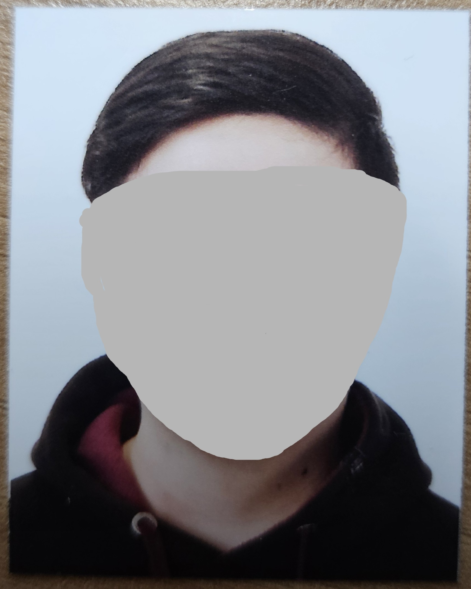
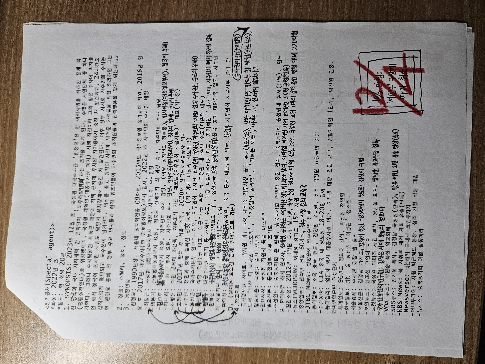
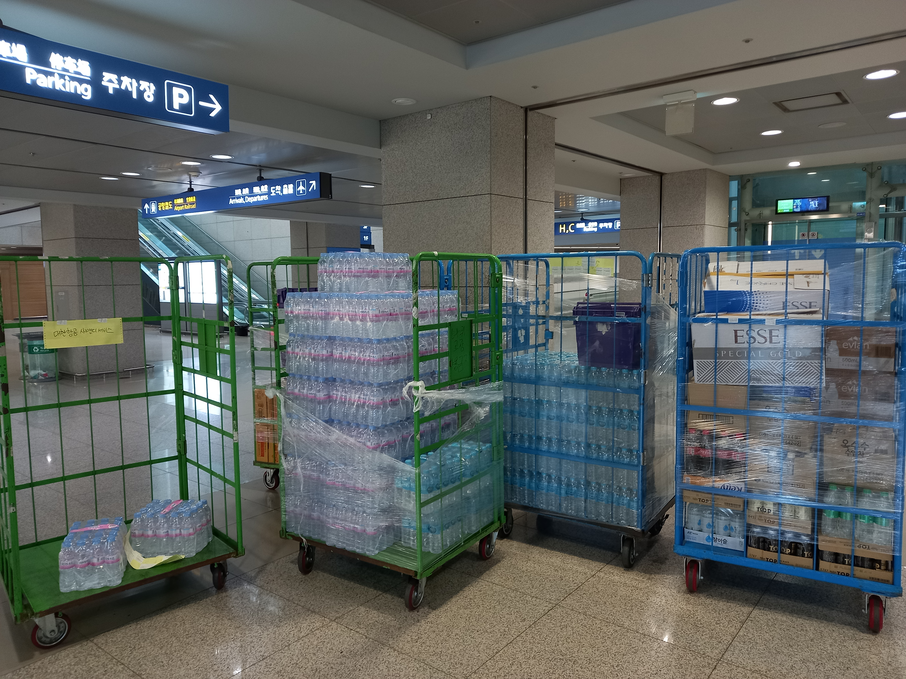
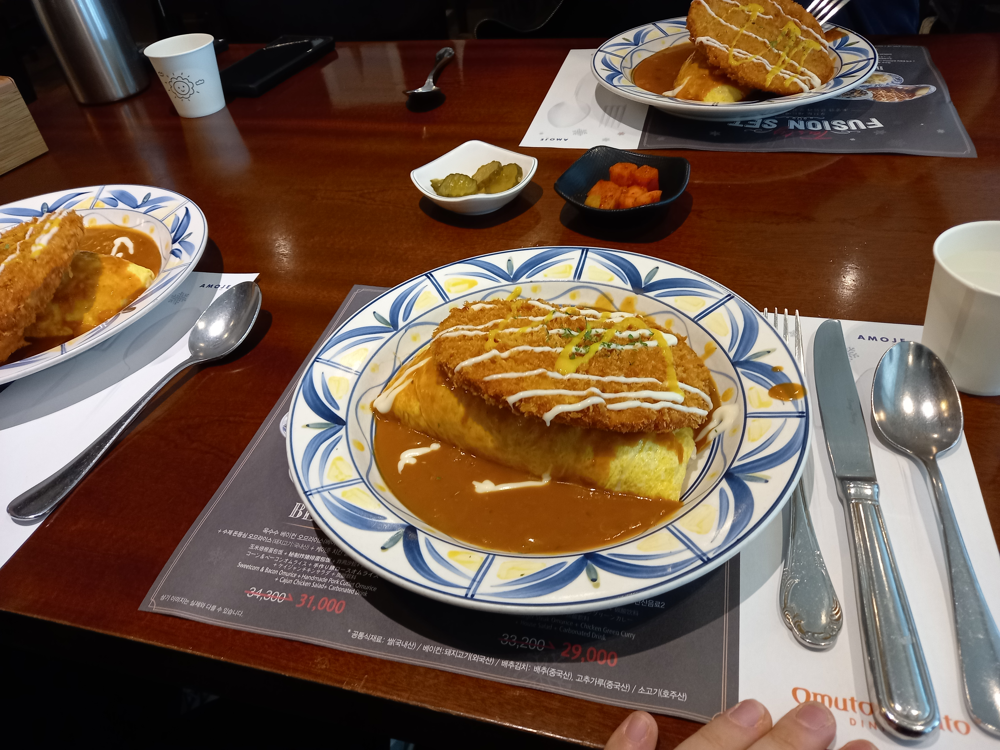
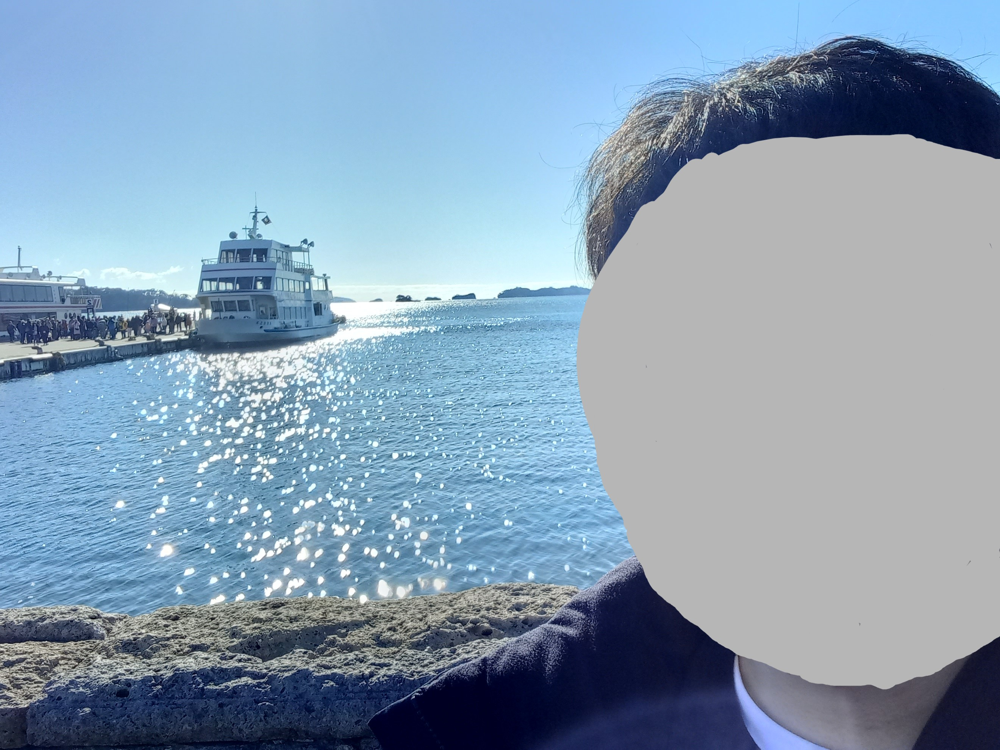
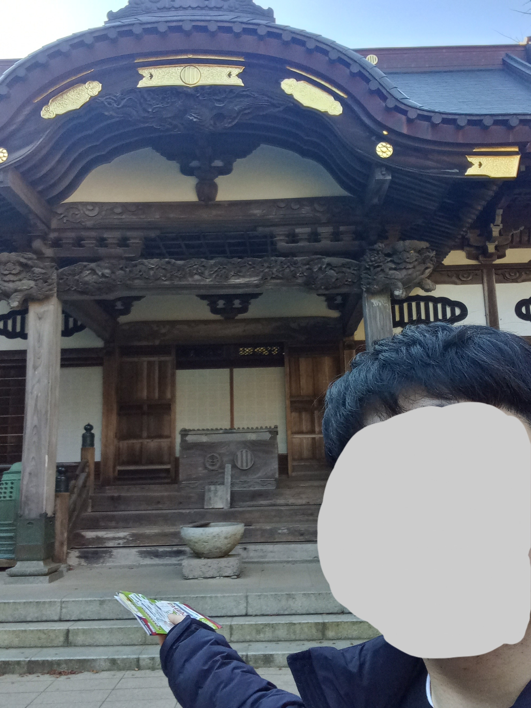
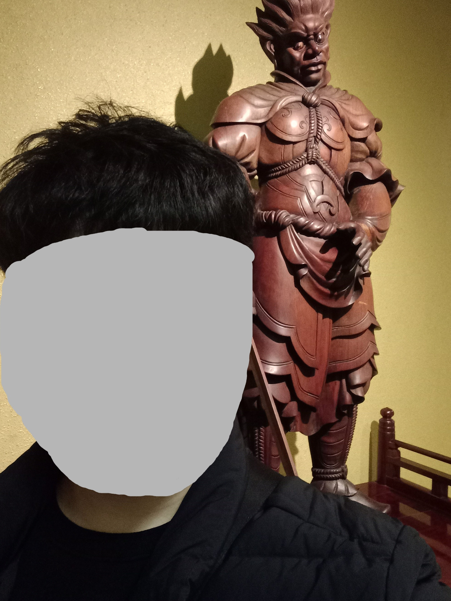
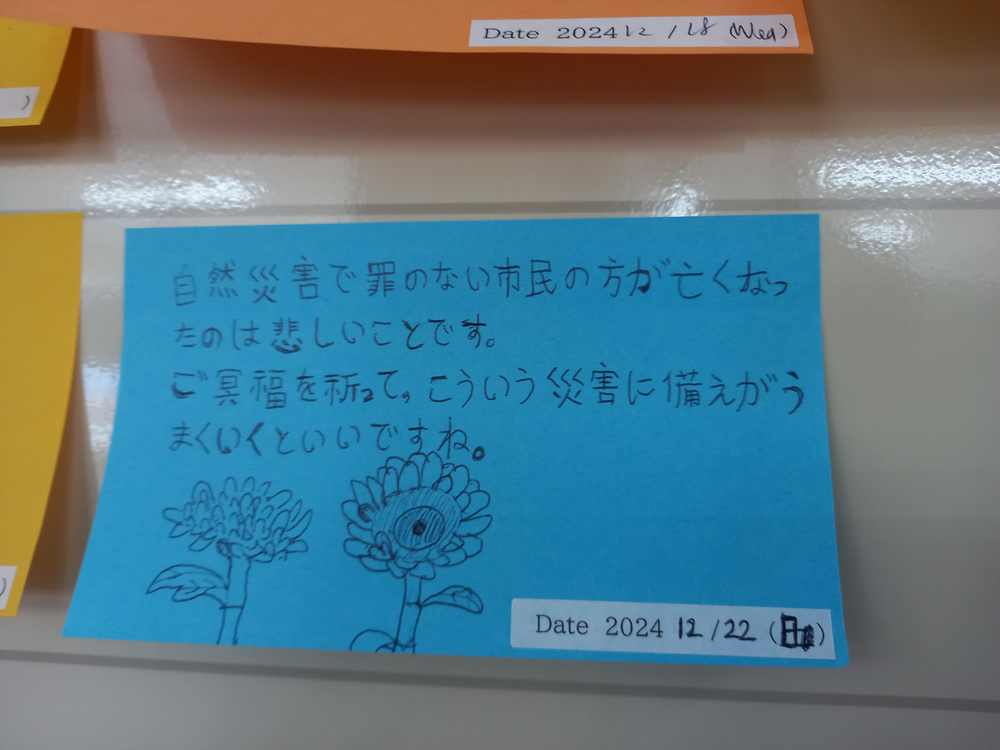

성년기

일본 여행 가려고 급히 여권 만드느라 급히 찍은 여권 사진.
사진사 왈, 규정상 눈썹과 이마가 보여야 한다길래 무스로 앞머리 다 넘긴채
찍었다.
라노벨 취미

예전에 구상했던 소설들. 지금은 다른 것들을 구상 중이다.
정치인, 경찰, 정보요원, 군인. 난 별의 별
기사들을 수집할 정도로 이들에 대한 관심이 많다.
결과적으로 직접 되진 못했으니,
대리만족하고자 작은 소설을 구상하는
취미가 생겼다. 끝내
나 자신도 만족하는 작품을 완성하고 싶다.
... 참고로 로맨스도 있다.
공항 편의점 알바


좌: 두번째 매니저가 주말에 많이 시켰다. 안 그래도 대차 끄는 스탭은 나
포함 2명 뿐이었는데...
우: 마지막으로 보는 날, 같이 일하던 형님이 공항 안에서 양식을
사줬다.
주 5일, 7개월하고도 반 동안 일했다. 처음엔
나름 수능 영어 3등급으로서 영어 회화가 기대됐다. 첨에 잠깐 있던 곳은 출국장
쪽이라 내국인들이 대다수였고, 대부분 기간 동안 일한 점포는 입국장 쪽이라
외국인들이 절반 이상이었다. 때문에
회화력이 저절로 올라갔다.
자금도 꽤 벌었고, 매니저 특히 스태프 간 소통 덕에
사회력(?)도 나름 올라갔다.
일본 여행


각각 마쓰시마해안(24.12.17), 즈이호덴(24.12.18).


각각 센다이대관음(24.12.21), 아라하마초등학교(현 '지진 유산',
24.12.22).
고등학교를 졸업한 직후 훗날 일본에서 살고 싶다는 희망이 생겼고 알바를
끝내고 돈이 모여서 일본 여행, 것도
첫 해외 여행을 가게 됐다. 일본을
생으로 느끼고 싶었기에 도쿄가 아닌, 모
(전)유튜버로 처음 접했던 센다이시를 갔다.
1주 간 일본의 사람과 교통, 외식 문화를
접하고 다양한 명소들을 간 건 좋았지만,
언어의 중요성을 뼛속 깊이 체감했다.
이번에 종강하고 JLPT 바로 공부해야지...
현재
컴퓨터에 대한 호기심으로 지원했고, 여행 4일차에 합격 전화가 왔다.(로밍
덕에 살았지...)
내용 자체가 전문적인지라 어렵지만, 계속 공부해야겠다.
다만, 웹은 내 적성과 잘 맞는 거 같다.(잡스크립은 아직...)